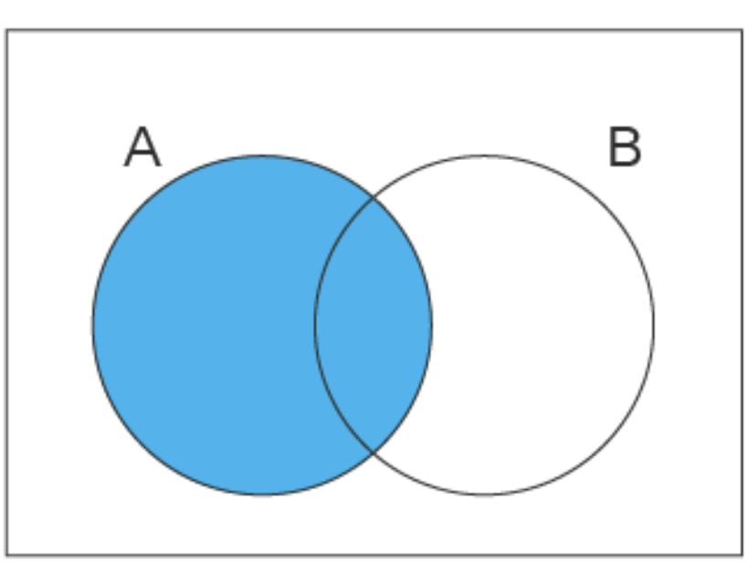
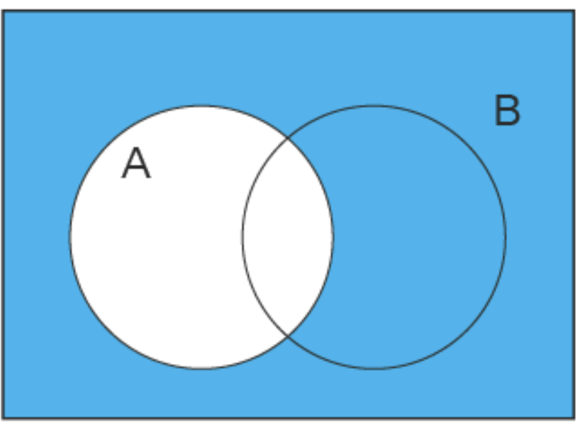
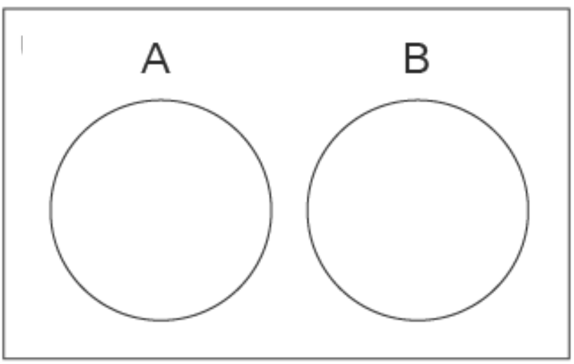
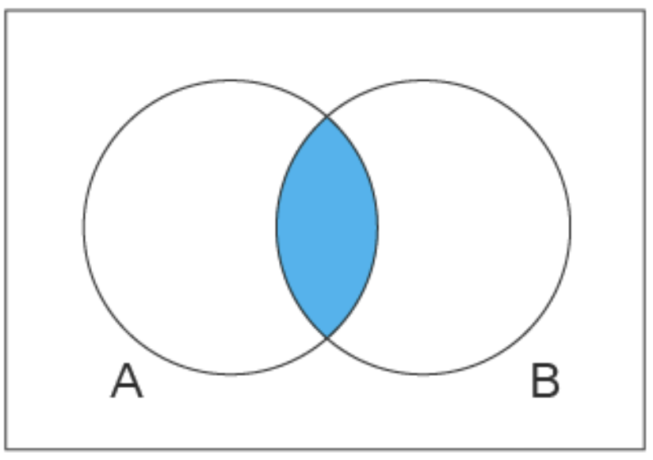
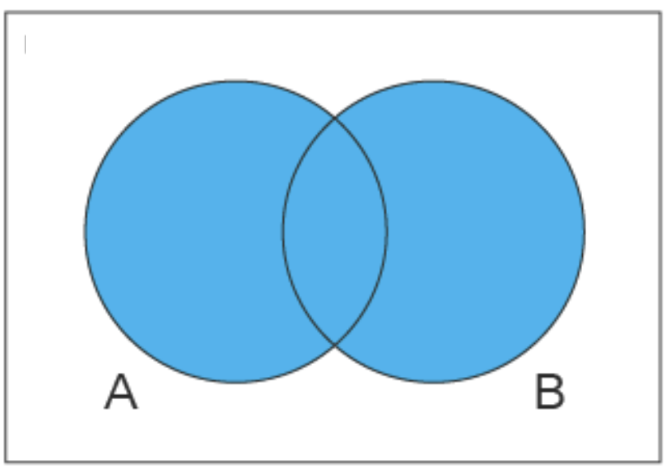
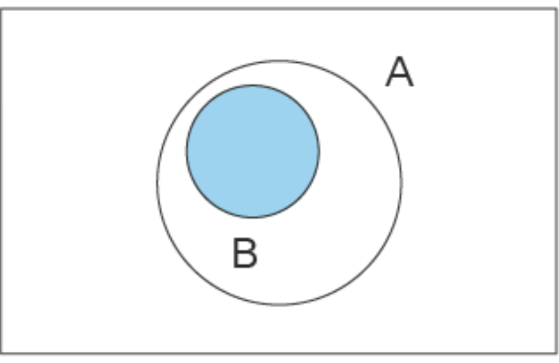

Revision 2 for exam 1
Find the matching item from the second column
1. Independent events a. \(P(A \cap B) \neq P(A) \times P(B)\) - Disjoint events
b. \(0\leq p \leq 1\) - Union
c. \(A, B\) disjoint \(P(A\cup B) = P(A) +P(B)\) - Intersection
d. \(P(A \cup B) = P(A) + P(B) - P(A \cap B)\) - Complement of A
e. \(P(A \cup B) \leq P(A) + P(B)\) - Sample space
f. \(A \cap B\) - Addition rule
g. \(P(A \cap B) = 0\) - Complement rule
h. \(P(S) = 1\) - Boole’s inequality
i. \(P(A^c) = 1 - P(A)\) - Dependent events
j. \(P(A \cap B) = P(A) \times P(B)\) - Kolmogorov’s axiom
k. \(A \cup B\) l. \(A^c\) m. \(S\)
When \(A \subset B\), then \(A \cup B = A\)
True
False
When \(A \subset B\), then \(A \cap B = A\)
True
False
One ball will be drawn at random from a box containing: 4 cyan balls, 3 magenta balls, and 5 yellow balls. What is the probability that the ball will be cyan?
What is the probability that the ball will not be cyan?
Instead of taking just one draw, consider taking two draws. You take the second draw without returning the first draw to the box. We call this sampling without replacement. What is the probability that the first draw is cyan and that the second draw is not cyan?
Now repeat the experiment, but this time, after taking the first draw and recording the color, return it to the box and shake the box. We call this sampling with replacement. What is the probability that the first draw is cyan and that the second draw is not cyan?
Two events A and B are independent if Pr(A and B)=Pr(A)P(B). Under which situation are the draws independent?
- You don’t replace the draw.
- You replace the draw.
- Neither
- Both
Say you’ve drawn 5 balls from the box, with replacement, and all have been yellow. What is the probability that the next one is yellow?
If you roll a 6-sided die six times, what is the probability of seeing neither a 5 or 6?
Please match the following venn diagrams with the corresponding set theory notation.
22. a.\(B \subset A\) 23. b. \(A\) & \(B\) disjoint 24. c. \(A\) 25. d. \(A \cup B\) 26. e. \(A \cap B\) 27. f. \(A^c\)
Solutions
| 1 | j |
|---|---|
| 2 | g |
| 3 | k |
| 4 | f |
| 5 | l |
| 6 | m |
| 7 | d |
| 8 | i |
| 9 | e |
| 10 | a |
| 11 | h, c, b |
| 12 | False |
| 13 | True |
| 14 | \(\frac{4}{4+3+5} = \frac{4}{12}\) \(= \frac{1}{3}\) |
| 15 | \(1 - \frac{1}{3} = \frac{2}{3}\) |
| 16 | Let \(C_1 = \{1st\:draw \: is \:cyan\}\) and \(C_2 = \{2nd\: draw\: is\: cyan\}\) We want :\(P(C_1 \cap C_2^c) = P(C_1) \times P(C_2^c \vert C_1)\) This is \(\frac{1}{3} \times (1 -\frac{3}{11}) = \frac{8}{33}\) |
| 17 | Because they are independent:\(P(C_1 \cap C_2^c) = P(C_1) \times P(C_2^c)\) = \(\frac{1}{3} \times \frac{2}{3} = \frac{2}{9}\) |
| 18 | b |
| 19 | \(\frac{5}{12}\) |
| 20 | Let \(A = \{5 \: or \: 6 \: pips\: facing\: up\}\) We want:\(P(A^c \cap A^c \cap A^c \cap A^c \cap A^c \cap A^c) = P(A^c)^6\) because of independence of rolling a die. \(= (\frac{2}{3})^6 = \frac{64}{729}\) |
| 21 | No question |
| 22 | c |
| 23 | f |
| 24 | b |
| 25 | e |
| 26 | d |
| 27 | a |